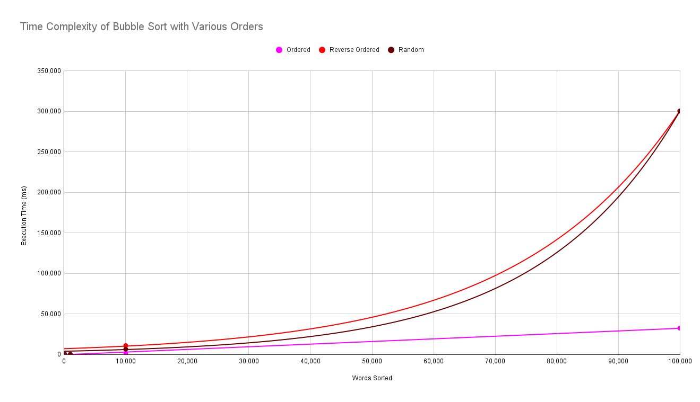
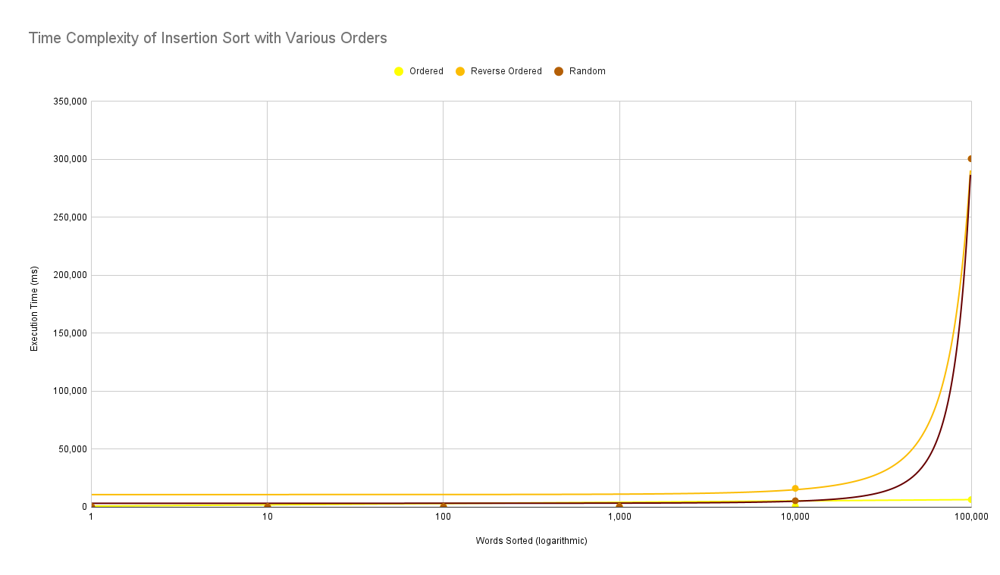
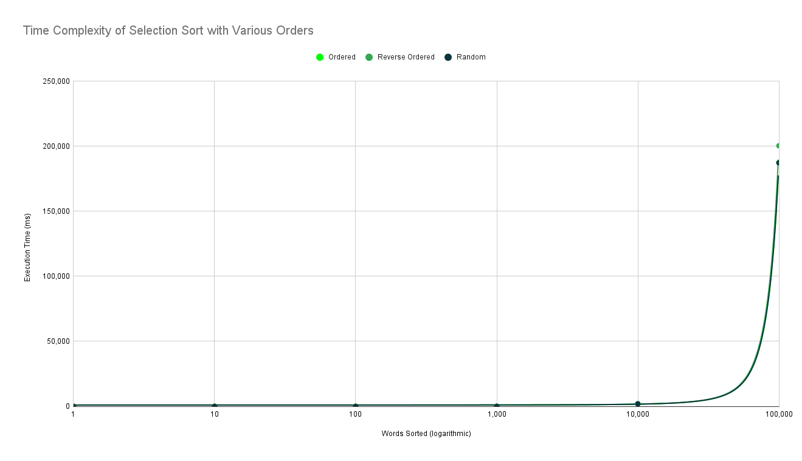

This sorting algorithm that uses radix sort to sort strings in alphabetical order.
However, it is special as it stores all letters, including special characters, in a map with a defined value. That defined value is how the algorithm would sort instead of using the ASCII value. This allows special characters to be sorted in the correct order instead of in the back, which most algorithms do.
{"A",0},{"a",0},{"Æ",1},{"æ",1},{"B",2},{"b",2}
Example map in C++ where capitalization is equailvalent and Æ is between A and B
This also opens up the possibility of sorting in an order other than alphabetical, putting numbers before or after letters, and many more.
The link to the repository is
here
The team members are Pranav, Omer, and Aryan.
The link the to spreadsheet is
here
When the number of words increases, the sorting speed can change in many ways based on the sorting algorithm and the order. For example, some algorithms scale exponentially - when the words increase, the speed is squared. This is bad as when words increase, the speed would increase drastically. This mis shown on the graph as a curved line where as the words increase, the time would increase more. However, the increase in speed can also depend on the order of the words too. Some algorithms have linear time, where the increase is constant, making a straight line.
In an already ordered list of words, Bubble Sort would sort in linear time. However, in random and a reverse ordered list, Bubble Sort would be in exponential time. This is shown in the graph as an already ordered list is linear while the others are exponential. This is because it can do a full pass once and realize it is already sorted. Reverse-ordered is the slowest, as it would be exponential and the complete opposite of the intention.
This also occurs in Insertion Sort with an ordered list being in linear time but random being exponential and reversed order being the exponential and the slowest. Despite these algorithms having linear time, these only occur for already ordered lists. This means that these algorithms would be quick for checking if a list is already ordered, but for actually sorting a random list, the algorithm would be slow.
In a Selection Sort, however, both ordered, reverse order, and random is exponential. This is because when traversing, Selection Sort also needs to traverse through the list again. This makes even an ordered list exponential, shown below.
 View Spreadsheet